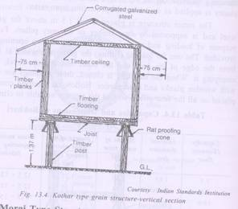
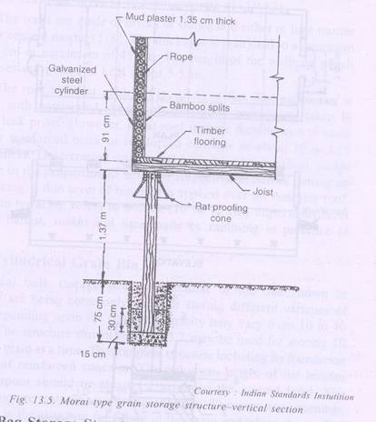
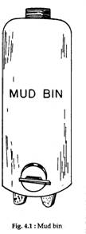
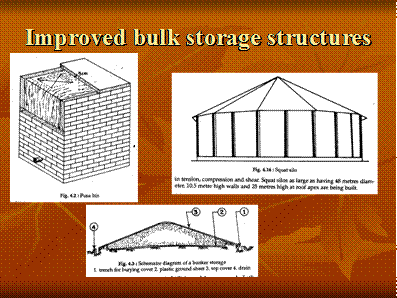

AECO 242 :: Lecture 06 :: STORAGE- GRAIN STORAGE – TYPES OF STORAGE STRUCTURES

Storage structures
Storage – to maintain the quality of grain after harvest for
- Maintaining the supply of grain
- Taking advantage of higher prices
Two methods of grain storage
- Bag storage
- Loose in bulk storage
The choice based on the local factors
- Type of grain
- Duration of storage
- Value of grain
- Climate
- Transport system
- Cost and availability of labour
- Cost and availability of bags
- Incidents of rodents and certain types of insects
Bag and bulk storages
Bag storage |
Bulk storage |
Flexibility of storage |
Inflexible storage |
Partly mechanical |
mechanical |
slow handling |
Rapid handling |
Considerable spillage |
Little spillage |
Low capital cost |
High capital cost |
High operating cost |
Low operating cost |
High rodent loss potential |
Low rodent loss potential |
Reinfestation occurs |
Little protection against reinfestation |
Traditional storage structures- (Bulk type)
Bukkhari type
- Cylindrical in shape
- Made of mud or combination of mud and split bamboo
- Raised above the ground by wooden or masonry platform
- Floor
- Walls
- Roof
- Improved type – same structure
- Rat proofing cones
- Grains – wheat, gram, paddy, maize and sorghum
- Capacity – 3.5 – 18 t
Kothar type
- Store – paddy, maize, sorghum, wheat
- Capacity – 9-35 t
- Structure – box
- Improved Kothar – 5cm thick wooden planks and beams
- No gap between the planks

Morai type
- Grains – paddy, maize, sorghum
- Capacity – 3.5 – 18 t
- Shape- inverted truncated cone



Modern storage structures
- Bagged storage system
- Silo storage system
- Air tight storage system
- Aerated storage system
- Low temperature storage system
- Controlled atmosphere storage system
- Damp grain storage system with chemicals
Bagged storage system
- Storage capacity is from 25 tonnes
- Generally the length is about twice the width or greater
- The entire structure should be moisture proof
- Large size doors of 2.4 x 2.4 m and top ventilators
- Each door is provided with a light overhanging hood
- It should be provide with ventilators – having wire netting and shutter
Bag Storage structure
Damp proof floor
1) 15 cm thick layer of gravel and sand well rammed at the bottom
2) 12.5 cm thick layer of stone or brick ballast or double layer of brick
3) 10 cm thick layer of cement concrete (1:4:8)
4) 1.25 cm thick bitumen mixed with sand
5) 4 cm thick layer of cement concrete (1:2:4)
6) 2.5 cm thick layer of cement concrete (1: 1 1/2: 3)
The walls are made of bricks or stone laid either in lime mortar (1:2), cement mortar (1:6)
Thickness of the wall is either 37.5 or 45 cm
The height of the walls on which trusses are kept: 5.5 m
Roof
Either gabled or flat roof
Gabled roof is covered with corrugated sheet
Flat roof is more durable – either reinforced brick or concrete – 10 to 12.5 cm thick
The terracing on the roof is made of brick ballast, surkhi, and lime ( 3.5: 1:1)
| Download this lecture as PDF here |